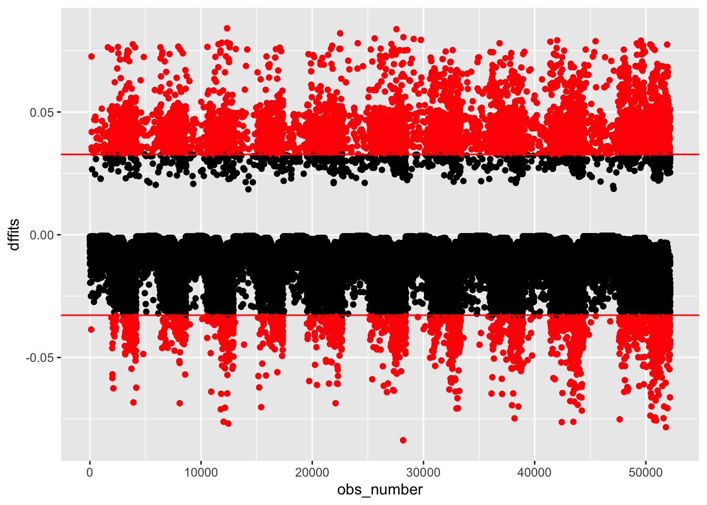

library(dplyr)
library(tidyverse)
library(tibble)
library(ggplot2)
library(data.table)
library(DT)
library(broom)
library(devtools)
# library(viridis)
library(knitr)
# library(hrbrthemes)
library(car)
#using data specified in this github repository:
install_github("jhs-hwg/cardioStatsUSA")
library(cardioStatsUSA)4 Modeling Diabetes Occurrence
4.1 Simple Diabetes Modeling
We are choosing Diabetes as the co-morbidity for modeling. We will try to predict the occurrence of diabetes as a function of blood pressure as well as other covariates.
The most basic model possible is a simple logistic regression model predicting diabetes status based on blood pressure:
#to prevent errors, exclude the rows with na:
used_vars = c('cc_diabetes', 'bp_sys_mean', 'demo_age_years', 'demo_race', 'demo_gender', 'cc_bmi', 'cc_smoke', 'bp_med_use')
clean_nhanes <- nhanes_data[complete.cases(nhanes_data[,..used_vars]), ]
simple_diab_model_sys <- glm(cc_diabetes ~ bp_sys_mean, data = clean_nhanes, family = binomial)
summary(simple_diab_model_sys)
Call:
glm(formula = cc_diabetes ~ bp_sys_mean, family = binomial, data = clean_nhanes)
Coefficients:
Estimate Std. Error z value Pr(>|z|)
(Intercept) -4.7658807 0.0796600 -59.83 <2e-16 ***
bp_sys_mean 0.0227452 0.0006007 37.87 <2e-16 ***
---
Signif. codes: 0 '***' 0.001 '**' 0.01 '*' 0.05 '.' 0.1 ' ' 1
(Dispersion parameter for binomial family taken to be 1)
Null deviance: 41278 on 52196 degrees of freedom
Residual deviance: 39888 on 52195 degrees of freedom
AIC: 39892
Number of Fisher Scoring iterations: 4knitr::kable(tidy(simple_diab_model_sys, exponentiate = TRUE, conf.int = TRUE), digits = 3)| term | estimate | std.error | statistic | p.value | conf.low | conf.high |
|---|---|---|---|---|---|---|
| (Intercept) | 0.009 | 0.080 | -59.828 | 0 | 0.007 | 0.010 |
| bp_sys_mean | 1.023 | 0.001 | 37.866 | 0 | 1.022 | 1.024 |
simple_diab_model_dia <- glm(cc_diabetes ~ bp_dia_mean, data = clean_nhanes, family = binomial)
summary(simple_diab_model_dia)
Call:
glm(formula = cc_diabetes ~ bp_dia_mean, family = binomial, data = clean_nhanes)
Coefficients:
Estimate Std. Error z value Pr(>|z|)
(Intercept) -1.406666 0.076384 -18.416 < 2e-16 ***
bp_dia_mean -0.006488 0.001074 -6.039 1.55e-09 ***
---
Signif. codes: 0 '***' 0.001 '**' 0.01 '*' 0.05 '.' 0.1 ' ' 1
(Dispersion parameter for binomial family taken to be 1)
Null deviance: 41006 on 51976 degrees of freedom
Residual deviance: 40969 on 51975 degrees of freedom
(220 observations deleted due to missingness)
AIC: 40973
Number of Fisher Scoring iterations: 4knitr::kable(tidy(simple_diab_model_dia, exponentiate = TRUE, conf.int = TRUE), digits = 3)| term | estimate | std.error | statistic | p.value | conf.low | conf.high |
|---|---|---|---|---|---|---|
| (Intercept) | 0.245 | 0.076 | -18.416 | 0 | 0.211 | 0.284 |
| bp_dia_mean | 0.994 | 0.001 | -6.039 | 0 | 0.991 | 0.996 |
4.1.0.1 Model Explanation:
For the logistic regression using systolic blood pressure, we can see that the odds ratio beta parameter is 1.024. This implies that a higher systolic blood pressure corresponds to increased chances of observing diabetes.
A more exact interpretation would be that: for one additional unit increase in systolic blood pressure, the estimated risk of having diabetes increases by 2.4%.
This value may not seem extremely high, yet it still has a p value evaluated to be 0 by R. We can also see that the 95% confidence interval of this parameter ranges between 1.022 and 1.024, meaning that the model predicts that the true relationship falls within this interval with a 95% certainty, since the true value of the parameter is most likely within this interval.
The opposite is true with diastolic blood pressure: the beta parameter is 0.996, implying that higher diastolic blood pressure corresponds to a lower chance of observing diabetes. For an additional unit increase in diastolic blood pressure, the estimated risk of having diabetes decreases by 0.04%.
Note: systolic blood pressure is a better predictor of cardiovascular disease, so I chose to consider systolic rather than diastolic in future models.
4.2 Demographic Model
Next, we build a model including the demographic variables as well. This will hopefully provide a more accurate model, since it will have access to the further information in order to make predictions.
demo_diab_model_sys <- glm(cc_diabetes ~ bp_sys_mean + demo_age_years + demo_race + demo_gender,data = clean_nhanes, family = binomial)
summary (demo_diab_model_sys)
Call:
glm(formula = cc_diabetes ~ bp_sys_mean + demo_age_years + demo_race +
demo_gender, family = binomial, data = clean_nhanes)
Coefficients:
Estimate Std. Error z value Pr(>|z|)
(Intercept) -5.6473577 0.0915063 -61.716 < 2e-16 ***
bp_sys_mean 0.0040216 0.0006986 5.756 8.60e-09 ***
demo_age_years 0.0516294 0.0009596 53.804 < 2e-16 ***
demo_raceNon-Hispanic Black 0.9071035 0.0357034 25.407 < 2e-16 ***
demo_raceNon-Hispanic Asian 0.7971431 0.0615302 12.955 < 2e-16 ***
demo_raceHispanic 0.8596099 0.0349608 24.588 < 2e-16 ***
demo_raceOther 0.7732236 0.0727607 10.627 < 2e-16 ***
demo_genderWomen -0.1472718 0.0270704 -5.440 5.32e-08 ***
---
Signif. codes: 0 '***' 0.001 '**' 0.01 '*' 0.05 '.' 0.1 ' ' 1
(Dispersion parameter for binomial family taken to be 1)
Null deviance: 41278 on 52196 degrees of freedom
Residual deviance: 36211 on 52189 degrees of freedom
AIC: 36227
Number of Fisher Scoring iterations: 5knitr::kable(tidy(demo_diab_model_sys, exponentiate = TRUE, conf.int = TRUE), digits = 3)| term | estimate | std.error | statistic | p.value | conf.low | conf.high |
|---|---|---|---|---|---|---|
| (Intercept) | 0.004 | 0.092 | -61.716 | 0 | 0.003 | 0.004 |
| bp_sys_mean | 1.004 | 0.001 | 5.756 | 0 | 1.003 | 1.005 |
| demo_age_years | 1.053 | 0.001 | 53.804 | 0 | 1.051 | 1.055 |
| demo_raceNon-Hispanic Black | 2.477 | 0.036 | 25.407 | 0 | 2.310 | 2.657 |
| demo_raceNon-Hispanic Asian | 2.219 | 0.062 | 12.955 | 0 | 1.965 | 2.501 |
| demo_raceHispanic | 2.362 | 0.035 | 24.588 | 0 | 2.206 | 2.530 |
| demo_raceOther | 2.167 | 0.073 | 10.627 | 0 | 1.876 | 2.495 |
| demo_genderWomen | 0.863 | 0.027 | -5.440 | 0 | 0.818 | 0.910 |
4.2.0.1 Model Explanation
In this model, we can still see a slight upwards trend with systolic blood pressure, although it is a bit weaker (1.024 > 1.003). With this parameter, the estimated risk of having diabetes increases only by 0.3%. Although the effect is smaller, we can see that the confidence interval is between 1.003 and 1.005, which does not include 1. So, although small, the positive relationship is most likely significant.
4.2.0.2 Demographics
Age:
The model also tells us that age is positively correlated with the observation of diabetes. With a log odds ratio of 1.054, it seems that every year increases the risk of diabetes occurrence by 5.4%.
Race:
The log odds ratio for categorical variables compares the other variables to the baseline “reference group”. Here, the “reference group” for the race variable is Non-Hispanic White. We can see that, in comparison to this group, all other races have significantly higher risk of diabetes: for example, the Hispanic population’s risk of diabetes occurrence is 2.36 times higher than the Non-Hispanic White population.
Gender:
With this variable, the reference group is men. We can see that women have a lower odds of having diabetes compared to men. Specifically, the risk of diabetes in women is about 85.6% of that of men.
4.3 Full Model
Lastly, we want to create a model including confounding variables. To achieve this, we must first determine which other variables are confounding, meaning they have significant associations with diabetes.
We can achieve this by using chi squared test, which compares whether or not the observed ratios of diabetes and confounding variables matches the ratios expected by random chance. If the chi squared test determines significance, then diabetes and the other variables commonly occur together and therefore are confounding.
4.3.0.1 Perform Chi Squared Tests:
#Testing for BMI
nhanes_bmi_diab <- nhanes_data %>% select(cc_diabetes, cc_bmi) %>% drop_na(cc_bmi) %>% drop_na(cc_diabetes)
nhanes_bmi_diab <- table(nhanes_bmi_diab)
#nhanes_bmi_diab
chisq.test(nhanes_bmi_diab)
Pearson's Chi-squared test
data: nhanes_bmi_diab
X-squared = 2368.3, df = 3, p-value < 2.2e-16#Testing for Smoking
nhanes_smoke_diab <- nhanes_data %>% select(cc_diabetes, cc_smoke) %>% drop_na(cc_smoke) %>% drop_na(cc_diabetes)
nhanes_smoke_diab <- table(nhanes_smoke_diab)
#nhanes_smoke_diab
chisq.test(nhanes_smoke_diab)
Pearson's Chi-squared test
data: nhanes_smoke_diab
X-squared = 435.81, df = 2, p-value < 2.2e-16#Testing for Hypertensive Medication use
nhanes_med_diab <- nhanes_data %>% select(cc_diabetes, bp_med_use) %>% drop_na(bp_med_use) %>% drop_na(cc_diabetes)
nhanes_med_diab <- table(nhanes_med_diab)
#nhanes_med_diab
chisq.test(nhanes_med_diab)
Pearson's Chi-squared test with Yates' continuity correction
data: nhanes_med_diab
X-squared = 5807.1, df = 1, p-value < 2.2e-16After this analysis, we can see that all three variables, BMI, Smoking, and Medication Use, are all confounding. We can include all of them in the next model, in addition to systolic blood pressure and the demographic variables:
full_diab_model_sys <- glm(cc_diabetes ~ bp_sys_mean + demo_age_years + demo_race + demo_gender+ cc_bmi + cc_smoke + bp_med_use, data = clean_nhanes, family = binomial)
summary(full_diab_model_sys)
Call:
glm(formula = cc_diabetes ~ bp_sys_mean + demo_age_years + demo_race +
demo_gender + cc_bmi + cc_smoke + bp_med_use, family = binomial,
data = clean_nhanes)
Coefficients:
Estimate Std. Error z value Pr(>|z|)
(Intercept) -6.3003463 0.1112295 -56.643 < 2e-16 ***
bp_sys_mean 0.0017066 0.0007373 2.315 0.0206 *
demo_age_years 0.0470354 0.0011312 41.579 < 2e-16 ***
demo_raceNon-Hispanic Black 0.6987360 0.0374745 18.646 < 2e-16 ***
demo_raceNon-Hispanic Asian 1.3022903 0.0660355 19.721 < 2e-16 ***
demo_raceHispanic 0.8889260 0.0366792 24.235 < 2e-16 ***
demo_raceOther 0.8913458 0.0763522 11.674 < 2e-16 ***
demo_genderWomen -0.3082492 0.0295124 -10.445 < 2e-16 ***
cc_bmi25 to <30 0.5927344 0.0444524 13.334 < 2e-16 ***
cc_bmi30 to <35 1.1736075 0.0463565 25.317 < 2e-16 ***
cc_bmi35+ 1.7702868 0.0480051 36.877 < 2e-16 ***
cc_smokeFormer 0.0614704 0.0335729 1.831 0.0671 .
cc_smokeCurrent 0.1853436 0.0403687 4.591 4.41e-06 ***
bp_med_useYes 0.9121351 0.0314064 29.043 < 2e-16 ***
---
Signif. codes: 0 '***' 0.001 '**' 0.01 '*' 0.05 '.' 0.1 ' ' 1
(Dispersion parameter for binomial family taken to be 1)
Null deviance: 41278 on 52196 degrees of freedom
Residual deviance: 33055 on 52183 degrees of freedom
AIC: 33083
Number of Fisher Scoring iterations: 6knitr::kable(tidy(full_diab_model_sys, exponentiate = TRUE, conf.int = TRUE), digits = 3)| term | estimate | std.error | statistic | p.value | conf.low | conf.high |
|---|---|---|---|---|---|---|
| (Intercept) | 0.002 | 0.111 | -56.643 | 0.000 | 0.001 | 0.002 |
| bp_sys_mean | 1.002 | 0.001 | 2.315 | 0.021 | 1.000 | 1.003 |
| demo_age_years | 1.048 | 0.001 | 41.579 | 0.000 | 1.046 | 1.050 |
| demo_raceNon-Hispanic Black | 2.011 | 0.037 | 18.646 | 0.000 | 1.869 | 2.164 |
| demo_raceNon-Hispanic Asian | 3.678 | 0.066 | 19.721 | 0.000 | 3.229 | 4.183 |
| demo_raceHispanic | 2.433 | 0.037 | 24.235 | 0.000 | 2.264 | 2.614 |
| demo_raceOther | 2.438 | 0.076 | 11.674 | 0.000 | 2.096 | 2.828 |
| demo_genderWomen | 0.735 | 0.030 | -10.445 | 0.000 | 0.693 | 0.778 |
| cc_bmi25 to <30 | 1.809 | 0.044 | 13.334 | 0.000 | 1.659 | 1.974 |
| cc_bmi30 to <35 | 3.234 | 0.046 | 25.317 | 0.000 | 2.954 | 3.542 |
| cc_bmi35+ | 5.873 | 0.048 | 36.877 | 0.000 | 5.347 | 6.454 |
| cc_smokeFormer | 1.063 | 0.034 | 1.831 | 0.067 | 0.996 | 1.136 |
| cc_smokeCurrent | 1.204 | 0.040 | 4.591 | 0.000 | 1.112 | 1.302 |
| bp_med_useYes | 2.490 | 0.031 | 29.043 | 0.000 | 2.341 | 2.648 |
4.3.0.2 Model Explanation
The previous variables in this model continue to show the same patterns, although again, the effect of systolic blood pressure is again reduced due to a lower log odds ratio. Now, the p value seems to be much higher at 0.02 (which is still significant, but much less so). The demographic variables also have much the same pattern, although Non-Hispanic Asians seem to have a much higher odds ratio than in the previous model.
4.3.0.3 Covariates
BMI:
In this variable, the baseline reference level is bmi <25. In comparison, those with higher bmi have increased risk of having diabetes, with the risk increasing the higher the bmi becomes. For example, those with bmi from 25-30 have a 1.8 times higher risk, while those with a bmi of 35+ have a 5.8 times higher risk.
Smoking:
With a baseline level of nonsmoking, former smokers may have about a 6% higher risk of diabetes. This may not be significant, however, given that the p value is only 0.067 and the odds ratio of 1 falls within the confidence interval. Current smokers, on the other hand, have about a 20% higher risk, this time with a much lower p value of 4*10^-6
Blood Pressure Medication Use:
Compared to those who do not use blood pressure medication, individuals who do have about a 2.5 times higher risk of experiencing diabetes.
4.4 Model Selection
It is possible to find an even better model by modifying which variables we include in our logistic regression model. We can achieve this using model selection, which will selectively add or subtract our explanatory variables from the model and evaluate its performance to choose the final best set of variables.
Explanation of model selection and or AIC?
4.4.0.1 Backwards Selection:
backwards = step(full_diab_model_sys)Start: AIC=33082.55
cc_diabetes ~ bp_sys_mean + demo_age_years + demo_race + demo_gender +
cc_bmi + cc_smoke + bp_med_use
Df Deviance AIC
<none> 33055 33083
- bp_sys_mean 1 33060 33086
- cc_smoke 2 33076 33100
- demo_gender 1 33164 33190
- bp_med_use 1 33909 33935
- demo_race 4 33930 33950
- cc_bmi 3 34756 34778
- demo_age_years 1 34931 34957formula(backwards)cc_diabetes ~ bp_sys_mean + demo_age_years + demo_race + demo_gender +
cc_bmi + cc_smoke + bp_med_useIt looks like the backwards selection model returned the same full model. In other words, removing variables does not improve its AIC, and therefore does not improve its performance.
4.4.0.2 Forward Selection
#start from a model without any predictors
nothing <- glm(cc_diabetes ~ 1, data = clean_nhanes, family=binomial)
summary(nothing)
Call:
glm(formula = cc_diabetes ~ 1, family = binomial, data = clean_nhanes)
Coefficients:
Estimate Std. Error z value Pr(>|z|)
(Intercept) -1.85919 0.01282 -145.1 <2e-16 ***
---
Signif. codes: 0 '***' 0.001 '**' 0.01 '*' 0.05 '.' 0.1 ' ' 1
(Dispersion parameter for binomial family taken to be 1)
Null deviance: 41278 on 52196 degrees of freedom
Residual deviance: 41278 on 52196 degrees of freedom
AIC: 41280
Number of Fisher Scoring iterations: 4forwards = step(nothing,
scope=list(lower=formula(nothing),upper=formula(full_diab_model_sys)), direction="forward")Start: AIC=41279.9
cc_diabetes ~ 1
Df Deviance AIC
+ bp_med_use 1 37076 37080
+ demo_age_years 1 37252 37256
+ cc_bmi 3 39218 39226
+ bp_sys_mean 1 39888 39892
+ demo_race 4 40891 40901
+ cc_smoke 2 40911 40917
+ demo_gender 1 41242 41246
<none> 41278 41280
Step: AIC=37079.85
cc_diabetes ~ bp_med_use
Df Deviance AIC
+ demo_age_years 1 35675 35681
+ cc_bmi 3 35907 35917
+ demo_race 4 36597 36609
+ bp_sys_mean 1 36788 36794
+ cc_smoke 2 36968 36976
+ demo_gender 1 37009 37015
<none> 37076 37080
Step: AIC=35681.48
cc_diabetes ~ bp_med_use + demo_age_years
Df Deviance AIC
+ cc_bmi 3 34070 34082
+ demo_race 4 34834 34848
+ demo_gender 1 35624 35632
+ bp_sys_mean 1 35654 35662
+ cc_smoke 2 35670 35680
<none> 35675 35681
Step: AIC=34082.43
cc_diabetes ~ bp_med_use + demo_age_years + cc_bmi
Df Deviance AIC
+ demo_race 4 33213 33233
+ demo_gender 1 33963 33977
+ bp_sys_mean 1 34050 34064
+ cc_smoke 2 34054 34070
<none> 34070 34082
Step: AIC=33232.52
cc_diabetes ~ bp_med_use + demo_age_years + cc_bmi + demo_race
Df Deviance AIC
+ demo_gender 1 33081 33103
+ cc_smoke 2 33170 33194
+ bp_sys_mean 1 33208 33230
<none> 33213 33233
Step: AIC=33102.89
cc_diabetes ~ bp_med_use + demo_age_years + cc_bmi + demo_race +
demo_gender
Df Deviance AIC
+ cc_smoke 2 33060 33086
+ bp_sys_mean 1 33076 33100
<none> 33081 33103
Step: AIC=33085.88
cc_diabetes ~ bp_med_use + demo_age_years + cc_bmi + demo_race +
demo_gender + cc_smoke
Df Deviance AIC
+ bp_sys_mean 1 33055 33083
<none> 33060 33086
Step: AIC=33082.55
cc_diabetes ~ bp_med_use + demo_age_years + cc_bmi + demo_race +
demo_gender + cc_smoke + bp_sys_meanThe Forward Selection process again selects the full model.
4.4.1 Forward-Backward Selection
bothways = step(nothing, list(lower=formula(nothing),upper=formula(full_diab_model_sys)),
direction="both",trace=0)
formula(bothways)cc_diabetes ~ bp_med_use + demo_age_years + cc_bmi + demo_race +
demo_gender + cc_smoke + bp_sys_meanThe Forward-Backward algorithm also selects all of the variables.
In this case, the best model (as determined by the AIC) includes all of the variables (systolic blood pressure, age, race, sex, smoking status, BMI, and medication use). In other situations, it may have returned just a few of these variables, but for this example, we can proceed with the full model.
5 Model Diagnostics
The next step will be to evaluate the model to determine its _____.
5.1 Likelihood Ratio Test
5.2 Model Fit
5.3 Calibration Plot
5.4 Homsler-Lemeshow Test
5.5 ROC Curve
5.6 Residuals Histogram
5.7 Ignore///
I followed a guide online but I don’t really know what this is doing:
clean_nhanes %>%
mutate(comp_res = coef(full_diab_model_sys)["demo_age_years"]*demo_age_years + residuals(full_diab_model_sys, type = "working")) %>%
ggplot(aes(x = demo_age_years, y = comp_res)) +
geom_point() +
geom_smooth(color = "red", method = "lm", linetype = 2, se = F) +
geom_smooth(se = F)`geom_smooth()` using formula = 'y ~ x'
`geom_smooth()` using method = 'gam' and formula = 'y ~ s(x, bs = "cs")'
clean_nhanes %>%
mutate(comp_res = coef(full_diab_model_sys)["bp_sys_mean"]*bp_sys_mean + residuals(full_diab_model_sys, type = "working")) %>%
ggplot(aes(x = bp_sys_mean, y = comp_res)) +
geom_point() +
geom_smooth(color = "red", method = "lm", linetype = 2, se = F) +
geom_smooth(se = F)`geom_smooth()` using formula = 'y ~ x'
`geom_smooth()` using method = 'gam' and formula = 'y ~ s(x, bs = "cs")'
Test for Multicollinearity
vif(full_diab_model_sys) GVIF Df GVIF^(1/(2*Df))
bp_sys_mean 1.169212 1 1.081301
demo_age_years 1.528167 1 1.236191
demo_race 1.207663 4 1.023866
demo_gender 1.091056 1 1.044536
cc_bmi 1.182024 3 1.028263
cc_smoke 1.173951 2 1.040908
bp_med_use 1.235766 1 1.111650Outliers
outlier_nhanes <-
clean_nhanes %>%
mutate(dffits = dffits(full_diab_model_sys))
outlier_nhanes %>%
mutate(obs_number = row_number(),
large = ifelse(abs(dffits) > 2*sqrt(length(coef(full_diab_model_sys))/nobs(full_diab_model_sys)),
"red", "black")) %>%
ggplot(aes(obs_number, dffits, color = large)) +
geom_point() +
geom_hline(yintercept = c(-1,1) * 2*sqrt(length(coef(full_diab_model_sys))/nobs(full_diab_model_sys)), color = "red") +
scale_color_identity()